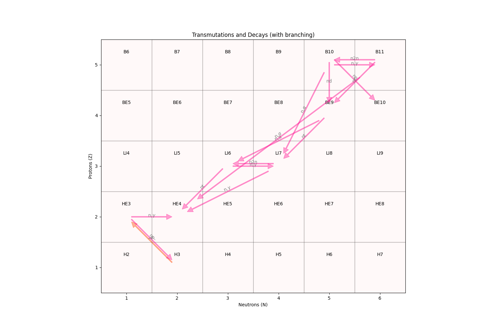

Note
Go to the end to download the full example code
Transmutation and decay reactions.
This plots some of the transmutation and decay pathways for the actinides and some light
nuclides using the burn chain definition that is included with ARMI. Note that many of
these reactions are shortcut for reactor analysis. For example, a U-238 capture goes
directly to NP-239 rather than first going to U-239. Some (n,2n) reactions quickly beta
decay, so the transmutation goes right to the product. For the decays, the arrow has been
adjusted in width based on the branching ratio. The transmutations are all constant since
their rates would depend on the neutron spectrum being modeled. This is mostly a demo of
more features of the armi.nucDirectory subpackage.
Users can input their own transmutation matrix or use this one.
A Bateman equation/matrix exponential solver is required to actually solve transmutation and decay problems, which can be provided via a plugin.

- 
import math
import os
import matplotlib.patches as mpatch
import matplotlib.pyplot as plt
from matplotlib.collections import PatchCollection
from armi.context import RES
from armi.nucDirectory import nuclideBases
def plotNuc(nb, ax):
"""Make a square patch for a single nuclide base."""
patch = mpatch.Rectangle((nb.a - nb.z - 0.5, nb.z - 0.5), 1.0, 1.0)
rx, ry = patch.get_xy()
cx = rx + patch.get_width() / 2.0
# bump label down for metastable nuclides
cy = ry + (3 - 2 * nb.state) * patch.get_height() / 4.0
ax.annotate(
nb.name,
(cx, cy),
color="k",
weight="normal",
fontsize=10,
ha="center",
va="center",
)
return patch
def plotAll(xlim, ylim):
"""Plot all nuclides and transformations."""
# load the burn chain input that comes with ARMI
with open(os.path.join(RES, "burn-chain.yaml")) as burnChainStream:
nuclideBases.imposeBurnChain(burnChainStream)
nbs = nuclideBases.instances
fig, ax = plt.subplots(figsize=(15, 10))
patches = []
for nb in nbs:
if not nb.trans and not nb.decays:
# skip nuclides without any transmutations defined
pass
patch = plotNuc(nb, ax)
patches.append(patch)
# loop over all possible transmutations and decays and draw arrows
for ti, trans in enumerate(nb.trans + nb.decays):
product = nuclideBases.fromName(trans.productNuclides[0])
if product.z == 0:
# skip lumped fission products and DUMP nuclides
continue
# add index-based y-offset to minimize overlaps
x, y, xp, yp = (
nb.a - nb.z,
nb.z + ti * 0.05,
product.a - product.z,
product.z + ti * 0.05,
)
if trans in nb.trans:
color = "deeppink"
else:
color = "orangered"
ax.annotate(
"",
(xp, yp),
(x, y),
arrowprops=dict(width=2 * trans.branch, shrink=0.1, alpha=0.4, color=color),
)
# add reaction label towards the middle of the arrow
xlabel = xp - (xp - x) * 0.5
ylabel = yp - (yp - y) * 0.5
# pretty up the labels a bit with some LaTeX and rotations
rxnType = (
trans.type.replace("nGamma", r"n,$\gamma$")
.replace("nalph", r"n,$\alpha$")
.replace("ad", r"$\alpha$")
.replace("bmd", r"$\beta^-$")
.replace("bpd", r"$\beta^+$")
)
if xp != x:
# rotate the nuclide type label to sit right on the arrow
rotation = math.atan((yp - y) / (xp - x)) * 180 / math.pi
else:
rotation = 0
ax.text(xlabel, ylabel, rxnType, color="grey", ha="center", rotation=rotation)
pc = PatchCollection(patches, facecolor="mistyrose", alpha=0.2, edgecolor="black")
ax.add_collection(pc)
ax.set_xlim(xlim)
ax.set_ylim(ylim)
ax.set_aspect("equal")
ax.set_xlabel("Neutrons (N)")
ax.set_ylabel("Protons (Z)")
ax.set_title("Transmutations and Decays (with branching)")
plt.show()
if __name__ == "__main__":
# make two plots, one zoomed on actinides and another on light nuclides
plotAll(xlim=(139.5, 154.5), ylim=(89.5, 98.5))
plotAll(xlim=(0.5, 6.5), ylim=(0.5, 5.5))
Total running time of the script: ( 0 minutes 3.267 seconds)